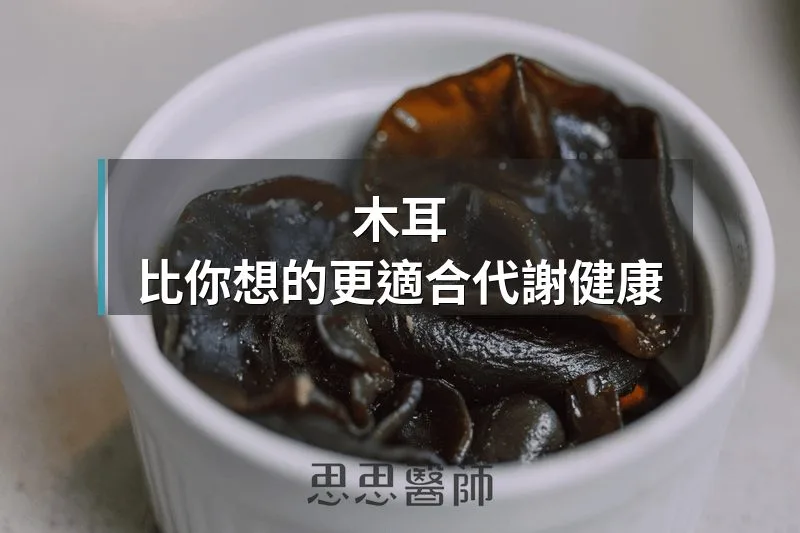

木耳，比你想的更適合代謝健康

木耳在台灣廚房裡太常見了，常見到幾乎讓人忘記它其實是一種功能性食物。但如果你有胰島素阻抗、血糖偏高，或者想認真顧好腸道，木耳值得你重新認識一次。
木耳的關鍵：多醣體和膳食纖維
木耳的健康效果，主要來自兩個成分：
多醣體（Polysaccharides），是木耳細胞壁裡的複雜碳水化合物。這些多醣體進入消化道後，人體的消化酵素無法分解它們，它們會完整抵達大腸，成為腸道菌的食物。這也是它們對代謝健康產生影響的核心機制。
膳食纖維，尤其是不溶性纖維，佔了木耳乾重的相當大比例，能在胃中吸水膨脹、延緩胃排空，讓飯後血糖的上升速度變慢。
木耳對腸道菌的影響
木耳多醣體是一種益生元，意思是它不會被人體吸收，但會餵養腸道裡的有益菌。研究發現，補充木耳多醣體後，幾類在代謝健康上扮演關鍵角色的菌群出現了明顯的增長：
Lachnospiraceae 和 Faecalibaculum：這兩類菌都是短鏈脂肪酸（SCFA）的主要產生者，尤其是丁酸（butyrate）。丁酸是大腸黏膜細胞的主要燃料，能強化腸道屏障、減少腸漏，同時透過抑制組蛋白去乙醯酶（HDAC）調節全身的發炎反應。
Dubosiella 和 Bacteroides：這兩個菌屬都和脂質代謝、膽固醇代謝有關，也和降低代謝症候群的風險相關聯。
Lactobacillus johnsonii 和 Bifidobacterium animalis：這兩種是比較熟悉的益生菌，和腸道免疫調節及發炎抑制都有關係。
同時，幾種在代謝疾病和腸漏症中常見的有害菌，包括 Desulfovibrio、Helicobacter 和 Enterorhabdus，在補充木耳多醣體後都出現了下降。
另一項研究發現，補充木耳多醣體的動物，大腦中的 IL-1β 下降了約 47%，TNF-α 下降了約 43%——這兩種都是慢性低度發炎的核心指標。腸道菌相改善後，發炎訊號沿著腸腦軸減弱，對全身代謝和神經健康都有間接的保護效果。
木耳對血糖的影響
木耳透過好幾個機制影響血糖：
1. 延緩消化吸收：木耳含有大量不溶性膳食纖維，吸水後形成凝膠狀物質，能延緩胃排空，讓葡萄糖進入血液的速度變慢，飯後血糖的峰值因此被壓低。
2. 抑制消化酵素：木耳萃取物被發現能抑制 α-澱粉酶和 α-葡萄糖苷酶這兩種消化酵素的活性。這兩種酵素負責把澱粉分解成葡萄糖，抑制它們的效果和一些糖尿病用藥（如 Acarbose）的作用原理是一樣的，但力道溫和許多。
3. 改善腸道菌相 → 提升胰島素敏感性：上面提到的短鏈脂肪酸，不只對腸道好。丁酸和丙酸會刺激腸道分泌 GLP-1 和 PYY 等腸泌素，而 GLP-1 有促進胰島素分泌、抑制升糖素、延緩胃排空的效果。換句話說，木耳透過改善腸道環境，間接強化了胰島素調控血糖的效率。
在糖尿病動物模型裡，補充木耳多醣體五週後，空腹血糖顯著下降，葡萄糖耐受測試的結果也明顯改善。這些都是動物研究，但機制和方向在人體上是合理成立的。
無糖木耳適合胰島素阻抗的人吃嗎？
直接說結論：適合，而且是少數食物裡你幾乎不用太多顧慮就可以吃的那種。
木耳本身的升糖指數（GI）很低。它的碳水化合物主要是無法被消化的多醣體和膳食纖維，進入消化道後幾乎不會直接轉化成葡萄糖，也不會刺激胰島素分泌。
更重要的是，木耳多醣體反而有助於改善胰島素阻抗的底層問題。胰島素阻抗的其中一個主要驅動因素，是腸道菌相失調導致的慢性低度發炎。木耳的益生元效果能提高短鏈脂肪酸的產量，壓低 LPS（細菌內毒素）的滲漏，間接降低發炎訊號，讓細胞對胰島素的反應慢慢恢復。
有胰島素阻抗的人可以把木耳當作日常飲食的一部分，不需要限量。唯一要注意的是：木耳本身對血糖友善，但你用什麼方式烹調它，才是真正影響血糖的關鍵。
木耳怎麼煮：不加糖，才能保住它的優點
台灣最常見的木耳吃法是涼拌木耳，但傳統食譜幾乎都有一樣東西：糖。糖讓木耳更開胃，但也讓這道菜從對血糖有益，變成對血糖的一個挑戰。
如果你有血糖或胰島素阻抗的考量，做涼拌木耳時可以完全不加糖。木耳本身帶有淡淡的鮮味，搭配醋、薑絲、醬油、香油，口感其實很完整，不甜也好吃。
如果你覺得需要甜味，可以用代糖替代：
甜菊糖（Stevia）：來自甜菊葉的天然萃取物，甜度是蔗糖的 200 到 300 倍，幾乎不影響血糖和胰島素。對腸道菌的影響目前研究結果尚未定論，使用量不大時是合理的選擇。
羅漢果糖（Monk Fruit / Luo Han Guo）：來自羅漢果萃取物，甜度高、GI 幾乎為零、對胰島素沒有刺激，耐熱性好，很適合烹調使用。
這兩種代糖的共同點是：不會讓血糖升高、不會刺激胰島素分泌，也不含熱量（或熱量極低）。在木耳料理裡以少量代替砂糖，基本上不影響它對代謝的正面效果。
烹調方式建議：
涼拌：木耳快速汆燙後，加薑絲、醋、少許醬油、麻油拌勻，不加糖或用少量羅漢果糖代替。這是保留最多多醣體結構、對血糖最友善的吃法。
湯品：木耳加薑、紅棗、枸杞煮成熱湯，不加糖，清爽且對腸道溫和。
炒菜：木耳和其他蔬菜一起快炒，完全不需要糖，搭配大蒜和少許鹽即可。
乾燥木耳在使用前要泡發，泡發後會膨脹到原來的 5 到 7 倍，這個步驟不影響它的多醣體成分。記得把泡發的水倒掉再使用。
一個食材，多層次的保護
木耳對代謝健康的意義，在於它同時作用在好幾個層面：從腸道菌相的調整，到短鏈脂肪酸的產生，到飯後血糖曲線的平緩，再到慢性發炎的抑制。這些效果不是單一藥物能做到的，而是透過改善腸道生態系間接達成的。
它是一種便宜、容易取得、台灣人本來就熟悉的食材。唯一需要調整的，只是煮的方式。少一匙糖，或換成羅漢果糖，木耳就可以成為你代謝飲食裡一個很扎實的日常選擇。
參考資料
（本文由我規劃架構與觀點，並協同 AI 校正與潤飾語句）
 空腹小雞跟思思醫師一起斷食，順便養一隻小雞來養小雞 →
空腹小雞跟思思醫師一起斷食，順便養一隻小雞來養小雞 →
好朋友週信
每週五一封：《健康駭客週報》這集的研究重點，加上家醫專欄這週的新文章。免費，隨時可以退訂。
延伸閱讀

洋車前子，足以媲美藥物的纖維
洋車前子含豐富的阿拉伯木聚醣，每日攝取10至15克可使糖化血色素下降約0.97%，效果媲美某些口服降糖藥。

超加工食品，和一般加工食品到底差在哪裡
超加工食品含有乳化劑與改性澱粉等添加物，會破壞食物基質、傷害腸道菌相，同時繞過飽足感訊號，導致過量進食。

優格吃了幾十年，你可能從來沒喝過克菲爾
克菲爾與優格差異很大，克菲爾含 30 到 50 種以上微生物且有酵母菌，文獻顯示它對腸道菌多樣性與乳糖不耐可能更有幫助。